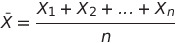
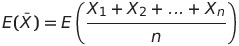
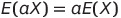
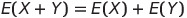
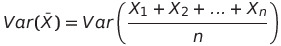
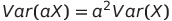
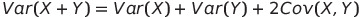
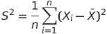
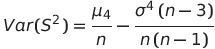

Researches about pure theory (T)
T13. Try to explain in your own words, the concept of population and sampling distributionResearches about applications (A)
A10. Take any population and any variable X. Draw m (large) samples of size n (as you like) and represent the following two distributions: Distribution of the Mean and Distribution of the Variance.Researches about theory relevant to applications (TA)
-T13.
In past researches, we have used the concept of statistical population, that is a set of so called statistical units.
In general a population can be either a finite set or an infinite one.
We have studied that in descriptive and inferential Statistics the population is very different:
- In descriptive Statistics, all the population is known.
- In statistical inference, instead, the population is unknown. We have to derive informations of all the population from one (or more than one) sample.
The concept of sampling distribution is used in statistical inference.
A sampling distribution is the probability distribution of a given random-sample-based statistic.
If an arbitrarily large number of samples, each involving multiple observations, were separately used in order to
compute one value of a statistic for each sample, then the sampling distribution is the probability distribution of the values that the statistic takes on.
We can represent an unknown population as a random variable X. It has some values and we can derive them from the samples with probabilities (not frequencies).
A random sample of a population is a set of n random variables.
Each random variable in the random sample is a copy of the random variable X, because each element of the sample belongs to the population.
We can think that each random variable is an observation on the population before the observation actually happens.
From the random variables in a random saple we can compute statistics.
For example if we want to calculate the mean of the random sample (sample mean) we have to:

The mean has different values according to the values of the random variables.
Given a large number of samples, we will see that for example for the mean certain values are repeated more than others.
Thanks to this we can draw a probability distribution, the so called sampling distribution.
We can define it as the probability distribution of all the values that the statistic mean can assume given an arbitrarily large number of samples of size n.
T14.
From the previous section the sample mean of a random sample of the population is defined as:
It is possible to compute the expected value and the variance of the new random variable.
The expected value is calculated thanks to this formula:

It is possible to show that the expected value of the sample mean matches with the expected value of the population, thanks to the properties
of the expected value, that are:


Speaking of the variance, it is equal to:

It is possible to show that the variance of the sample mean is the variance of the population divided by the sample size, thanks to these properties:


Where the covariance of X and Y is 0 if they are indipendent, like in our case.
Now we can talk about the sample variance. It is defined as:

We now can compute expected value and variance of this random variable.
The expected value of the variance is:
The variance of the sample variance is:

A10.
The application allows the generation of n throws of a dice. It calculates the mean and variance.
It allows you to generate m samples with v elements and calculates their mean and variance. It is possible to visualise the samples,
display the graph of the distribution of the numbers, the plot of the general mean, the mean of the samples against the overall mean and the
variance of the samples against the overall variance.
Source code!